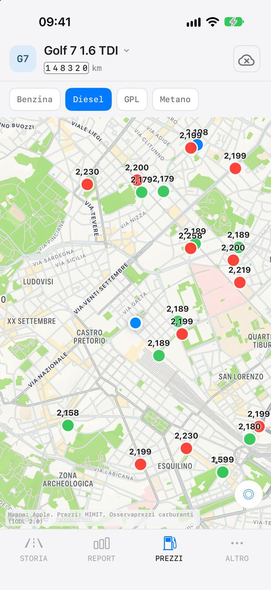

Le spese di auto e moto, a chilometri.
Kilòmetro registra rifornimenti, ricariche, manutenzioni e scadenze e calcola quanto costa ogni chilometro. Gratis e senza pubblicità, su iPhone e Android.
Ogni spesa al suo chilometro
Nella Storia rifornimenti, ricariche e tagliandi stanno in fila per contachilometri, e fra un pieno e l'altro c'è la tratta con i chilometri e il consumo. Il Report confronta i mesi; i Prezzi mostrano i distributori vicini.



Le funzioni
Legge lo scontrino
Da una foto compila fornitore, litri, prezzo e totale, da controllare prima di salvare. In abbonamento, con prova gratuita.
Segue le elettriche
Ricariche in kWh a casa o alla colonnina, con le percentuali della batteria e i kWh ogni 100 km.
Ricorda le scadenze
Revisione, bollo e assicurazione, con una notifica prima della data.
Tiene i dati tuoi
Il registro resta sul telefono e nel tuo iCloud o Google Drive. Con lo stesso Drive lo storico è uguale su iPhone e Android.
Mostra i prezzi vicini
Benzina, diesel, GPL e metano dei distributori intorno a te, dai dati pubblici del ministero.
Vale per ogni veicolo
Auto, moto e scooter a benzina, diesel, GPL, metano, ibridi ed elettrici.
Calcola il tuo costo al chilometro
Il conto somma un anno di carburante o ricariche e le spese fisse. L'app fa lo stesso calcolo sulle spese che registri.
0,20 €al chilometro
- Al mese
- 253 €
- In un anno
- 3.038 €
- Carburante
- 1.688 €
- Spese fisse
- 1.350 €
Domande
È gratis?
Sì. Kilòmetro è gratis e senza pubblicità. Solo la lettura dello scontrino è in abbonamento, con una prova gratuita.
Quali veicoli e spese si registrano?
Auto, moto e scooter di ogni alimentazione. Rifornimenti, ricariche, manutenzione, bollo, assicurazione e pedaggi.
Posso fotografare lo scontrino o la pompa?
Lo scontrino sì, con l'abbonamento; alle colonnine anche la ricevuta della ricarica. Il display della pompa non viene letto.
Posso registrare un veicolo elettrico?
Sì. Le ricariche si registrano in kWh, a casa o alla colonnina, con le percentuali della batteria.
Va bene per chi usa un furgone?
Sì, se è un veicolo personale: tra le categorie c'è Furgone. Kilòmetro non gestisce flotte aziendali.
Si vede bene su iPhone Duo?
Sì. Chiuso mostra una colonna; aperto in orizzontale ne mostra due, divise sulla piega.
Scarica Kilòmetro
Gratis e senza pubblicità, su iPhone e Android, in italiano, inglese, francese e spagnolo.